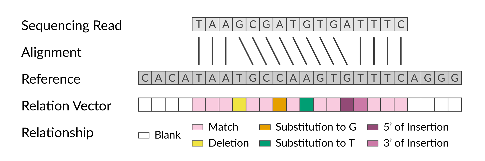

Relation Vectors
Relationships between reads and references
A relation vector encodes the relationship between one sequencing read (or pair of mated reads) and each base in the reference sequence. SEISMIC-RNA defines eight primary relationships:
Match: The reference base aligned to a high-quality base of the same kind in the read.
Deletion: The reference base aligned between two bases in the read.
5’ of Insertion: The reference base aligned to any read base immediately 5’ of an extra base in the read.
3’ of Insertion: The reference base aligned to any read base immediately 3’ of an extra base in the read.
Substitution to A: The reference base is not A, and it aligned to a high-quality A in the read.
Substitution to C: The reference base is not C, and it aligned to a high-quality C in the read.
Substitution to G: The reference base is not G, and it aligned to a high-quality G in the read.
Substitution to T: The reference base is not T, and it aligned to a high-quality T in the read.
This figure illustrates six of these primary relationships, as well the “blank” relationship for positions in the reference outside the span of the read.
Encoding primary relationships
Each position in a relation vector is physically represented by one byte (eight bits); each bit corresponds to one of the eight types of primary relationship. For a given position in the relation vector, the byte(s) corresponding to the relationship(s) at that position are turned on (set to 1); all other bits are set to 0. The following table indicates which relationship each bit represents. Each bit is shown as the sole 1 within an entire byte (8-digit binary number). The number’s decimal (Dec) and hexadecimal (Hex) forms are also shown.
Byte |
Dec |
Hex |
Relationship |
|---|---|---|---|
00000001 |
001 |
01 |
Match |
00000010 |
002 |
02 |
Deletion |
00000100 |
004 |
04 |
5’ of Insertion |
00001000 |
008 |
08 |
3’ of Insertion |
00010000 |
016 |
10 |
Substitution to A |
00100000 |
032 |
20 |
Substitution to C |
01000000 |
064 |
40 |
Substitution to G |
10000000 |
128 |
80 |
Substitution to T |
Encoding ambiguous relationships
Oh, if only encoding relation vectors were that straightforward! Though most bases in a read will have primary relationships with the bases in the reference to which they align, two phenomena make it more difficult for some bases to define the relationship:
low-quality base calls
ambiguous insertions and deletions
Encoding low-quality base calls
A low-quality base call is defined as having a Phred quality score below the user-specified threshold (default: 25). Low-quality base calls are treated as if they could be any of the four bases. The type of relationship that would occur if the read base were each of the four bases is determined. The bytes for those relationships are united via bitwise OR into a consensus byte for the ambiguous relationship.
For example, suppose a low-quality base call in the read aligns to a T in the
reference.
If the read base (which is unknown because of its low quality) were actually A,
then the relationship would be a substitution to A (00010000).
Likewise if the read base were C (00100000) or G (01000000).
If the read base were T, then the relationship would be a match (00000001).
The bytes for these four possible situations are merged by taking the bitwise OR
into a consensus byte (01110001) that shows ambiguity in the relationship.
This consensus byte is inserted into the relation vector.
If read were |
Then relationship would be |
Byte |
Dec |
Hex |
|---|---|---|---|---|
A |
Substitution to A |
00010000 |
016 |
10 |
C |
Substitution to C |
00100000 |
032 |
20 |
G |
Substitution to G |
01000000 |
064 |
40 |
T |
Match |
00000001 |
001 |
01 |
Low-quality |
Any of the above |
01110001 |
113 |
71 |
In the following table, each row repeats this calculation for one type of base
in the reference (column “Ref”).
Each column named “Read: A?” / “Read: C?” / “Read: G?” / “Read: T?” shows what
the relationship would be if the low-quality base in the read were actually the
base in the column header.
For example, in the first row, the reference base is A: if the read base were A,
then the relationship would be a match (00000001); and if it were C, then
the relationship would be a substitution to C (00100000).
The column “Byte” shows the resulting ambiguous relationship, the bitwise OR of
the four columns “Read: A/C/G/T?”.
Ref |
Read: A? |
Read: C? |
Read: G? |
Read: T? |
Byte |
Dec |
Hex |
|---|---|---|---|---|---|---|---|
A |
00000001 |
00100000 |
01000000 |
10000000 |
11100001 |
225 |
e1 |
C |
00010000 |
00000001 |
01000000 |
10000000 |
11010001 |
209 |
d1 |
G |
00010000 |
00100000 |
00000001 |
10000000 |
10110001 |
177 |
b1 |
T |
00010000 |
00100000 |
01000000 |
00000001 |
01110001 |
113 |
71 |
Note
A byte that has more than one bit set to 1 does not count more than once towards the total number of matches or mutations. To learn how mutations in relation vectors are counted, see [REF].
Encoding ambiguous insertions and deletions
Insertions and deletions (collectively, “indels”) in the read cause ambiguities
that even the highest quality sequencing reads could not prevent.
When one or more bases are inserted or deleted in a repetitive sequence, the
exact base that mutated cannot be determined.
For example, if the reference is ATCCTG and the read is ATCTG, then one
C was clearly deleted from the read.
But determining whether it was the first or second C is impossible because the
alignments are equally good:
Deletion of the first C
AT-CTG
|| |||
ATCCTG
Deletion of the second C
ATC-TG
||| ||
ATCCTG
Ambiguities in the location of a relationship are encoded by turning on the bit
of every possible relationship at each position.
In the above example, there could be a deletion (00000010) or a match
(00000001) at position 3 of the reference, so the byte it receives is the
bitwise OR of the two relationships: 00000011.
Likewise for position 4.
Thus, the relationship byte at each position (Pos) in the alignment would be
Pos |
Byte |
Hex |
|---|---|---|
1 |
00000001 |
01 |
2 |
00000001 |
01 |
3 |
00000011 |
03 |
4 |
00000011 |
03 |
5 |
00000001 |
01 |
6 |
00000001 |
01 |
Note
A byte that has more than one bit set to 1 does not count more than once towards the total number of matches or mutations. To learn how mutations in relation vectors are counted, see [REF].
To learn how the algorithm that finds ambiguous indels works, see [REF].
Encoding positions not covered by the read
If a read is shorter than the reference, then some positions in the reference
will not be covered by the read.
The “blank” positions to which the read does not align provide no information
and are thus considered fully ambiguous and assigned the byte 11111111
(decimal 255, hexadecimal ff).
Encoding paired-end reads
For paired-end reads, both mates produce a relation vector. They must be merged into one consensus relation vector to avoid double-counting any positions where the two mates overlap. Ideally, the mates would have identical relationships. However, they often differ because a position is covered in one mate but not in the other, one mate’s Phred score is above the threshold while the other’s is below, or (more rarely) the base calls themselves differ.
Encoding consensus relationships
When finding the consensus of two mates, information in one mate should fill in for a lack thereof in the other. Recall that each byte indicates all possible relationships at its position. The more bits that are set to 1, the more ambiguity (and the less knowledge) there is about the relationship. For one mate to add knowledge to the other, the consensus byte must thus have no more 1s than the byte of either mate. Specifically, a bit in the consensus should be 1 only if it is 1 in both mates. This result is achieved using the bitwise AND operation.
For example, consider the following mate 1 and mate 2, where the column “Result” indicates the consensus byte after taking the bitwise AND:
Pos |
Mate 1 |
Mate 2 |
Result |
|---|---|---|---|
1 |
00000001 |
00000001 |
00000001 |
2 |
00000001 |
11010001 |
00000001 |
3 |
11100001 |
01000000 |
01000000 |
4 |
11111111 |
00000001 |
00000001 |
5 |
11111111 |
01110001 |
01110001 |
6 |
11111111 |
11111111 |
11111111 |
At position 1, the mates agree on a match.
At position 2, mate 2 has low quality, but mate 1 has a high-quality match, so
that the result has only the match bit set to 1.
Similarly, at position 3, a substitution to G in mate 2 compensates for the low
quality base call in mate 1: substitution to G is the consensus.
Mate 1 does not cover the positions 4-6 (hence the blank bytes 11111111).
Mate 2 informs that position 4 is a match, but it is low quality at position 5,
so even the consensus byte is ambiguous.
Neither mate covers position 6, so the consensus byte is blank.
Encoding irreconcilable relationships
It is possible, although rare, for mates 1 and 2 to share no bits.
For example, if mate 1 were a high-quality match (00000001) and mate 2 were
a high-quality substitution to T (10000000), then the bitwise AND would be
all zeros (00000000).
The mates would be irreconcilable at this position.